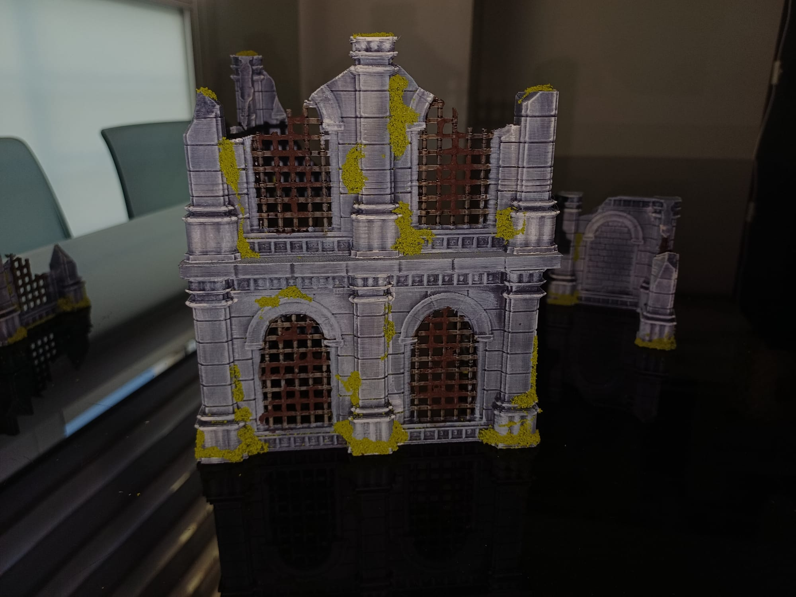
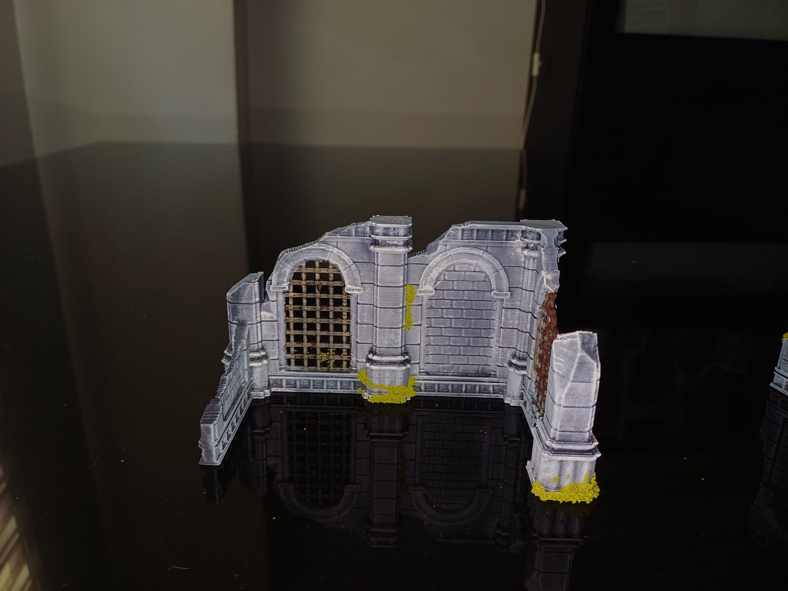
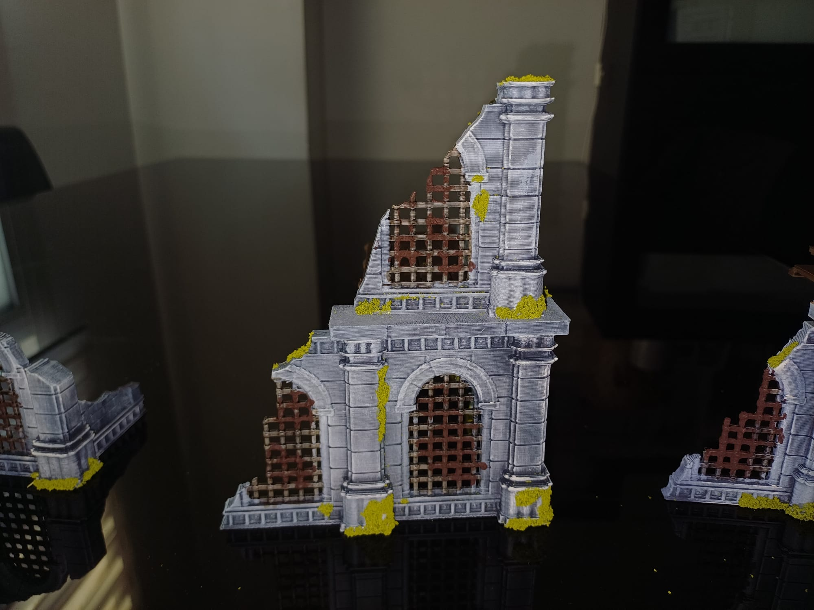
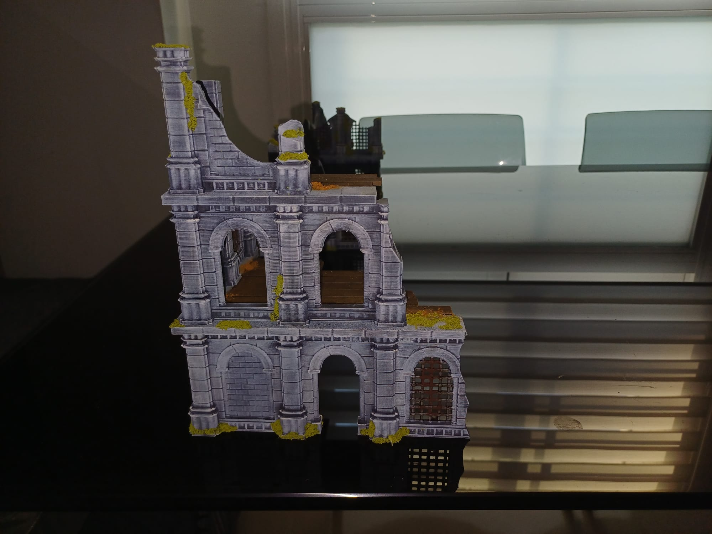
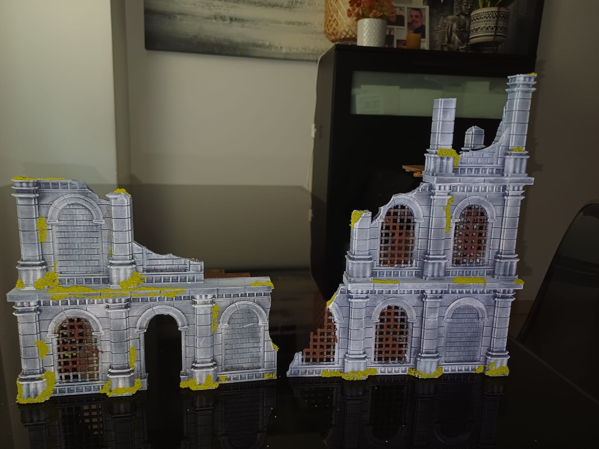

Trincheras
Sistemas de trincheras, parapetos, sacos terreros, posiciones defensivas y elementos de guerra para crear auténticos campos de batalla de Trench Crusade.

Creamos mesas de juego ambientadas en el oscuro universo de Trench Crusade utilizando escenografía impresa en 3D de alta calidad: trincheras, ruinas, edificios, fortificaciones y elementos de guerra.
En Trench Crusade Valencia queremos que cada partida tenga una ambientación a la altura del juego. Por eso estamos creando una colección de escenografía impresa en 3D diseñada para representar trincheras, ruinas, fortificaciones y escenarios devastados.
Nuestra colección está formada por modelos de diferentes artistas y diseñadores especializados en miniaturas, wargames y escenografía 3D. Combinamos diferentes piezas para crear mesas de juego variadas y llenas de detalles.
Los archivos digitales utilizados para nuestras impresiones han sido adquiridos legalmente a sus respectivos creadores. Cada modelo pertenece a su autor y respetamos sus derechos de propiedad intelectual.
Sistemas de trincheras, parapetos, sacos terreros, posiciones defensivas y elementos de guerra para crear auténticos campos de batalla de Trench Crusade.
Edificios destruidos, muros derrumbados y estructuras devastadas para representar un campo de batalla marcado por años de conflicto.
Fábricas, almacenes, viviendas, iglesias y otras construcciones que permiten crear mesas de juego urbanas y escenarios llenos de cobertura.
Búnkeres, barricadas, puestos defensivos y posiciones estratégicas para crear escenarios tácticos y partidas de wargames más inmersivas.
Trabajamos con modelos creados por diferentes artistas y diseñadores 3D especializados en escenografía, miniaturas y wargames.
Los archivos utilizados para nuestras impresiones son adquiridos a través de las plataformas y tiendas de sus respectivos creadores.
Cuando sea posible, cada pieza incluirá información sobre su diseñador y un enlace para conocer su trabajo o adquirir sus modelos directamente.
Una selección de piezas de nuestra colección de escenografía impresa en 3D para nuestras mesas de Trench Crusade en Valencia. Cada modelo pertenece a su respectivo artista.

Escenografía de trincheras para partidas de Trench Crusade.

Elementos modulares para crear campos de batalla y posiciones defensivas.

Ruinas y estructuras destruidas para crear escenarios de combate urbanos.

Construcción destruida para ambientar escenarios y mesas de wargames.

Posición defensiva para crear escenarios tácticos de Trench Crusade.

Ejemplo de mesa de juego ambientada para partidas de Trench Crusade.
Una parte fundamental de nuestra colección son los artistas y diseñadores 3D que crean los modelos que posteriormente damos vida mediante impresión 3D.
Queremos reconocer su trabajo y facilitar que cualquier persona interesada pueda conocer sus diseños y adquirirlos directamente a través de sus canales oficiales.
Próximamente iremos incorporando información sobre los diferentes artistas cuyos modelos forman parte de nuestra colección de escenografía.
Todos los modelos utilizados en nuestras impresiones pertenecen a sus respectivos autores y creadores.
Los archivos digitales utilizados para realizar las impresiones no se distribuyen desde esta web.
Cuando esté disponible, desde cada pieza podrás acceder a la página oficial del artista o a la plataforma donde puedes adquirir legalmente su diseño.
Nuestra colección de escenografía impresa en 3D crecerá junto al proyecto de Trench Crusade Valencia y nuestra comunidad de jugadores.
Nuestro objetivo es disponer de mesas cada vez más completas, variadas y espectaculares para partidas, campañas, jornadas y torneos de wargames.
Si eres artista o diseñador de escenografía 3D y quieres que conozcamos tu trabajo, estaremos encantados de descubrir nuevos proyectos.
Estamos construyendo nuestra comunidad de jugadores de Trench Crusade en Valencia.
Si eres diseñador de escenografía 3D y quieres mostrarnos tu trabajo, puedes ponerte en contacto con nosotros.
Seguiremos incorporando nuevas mesas, escenarios, trincheras, ruinas y elementos de escenografía.